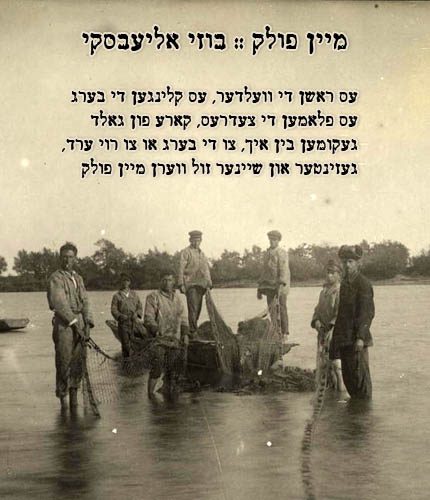

HOME
ABOUT
NEWS :: GIGS
MUSIC
CONTACT
:: all songs
:: Biro & Bidzhan EP ::
:: Amur EP ::
videos ::
not recorded yet ::
All Pictures were taken in
Birobidzhan
~1930s
1
* BirobidzhaN *
<a href="http://shiracarmel.bandcamp.com/track/birobidzhan">Birobidzhan by the Technicalities (Shira Z. Carmel & Alon Diament)</a>
2
* Di Bahn KumT *
<a href="http://shiracarmel.bandcamp.com/track/di-bahn-kumt">Di Bahn Kumt by the Technicalities (Shira Z. Carmel & Alon Diament)</a>
3
* Birobidzhaner LieD *
<a href="http://shiracarmel.bandcamp.com/track/birobidzhaner-lied">Birobidzhaner Lied by the Technicalities (Shira Z. Carmel & Alon Diament)</a>
4
* StalineN *
<a href="http://shiracarmel.bandcamp.com/track/stalinen">Stalinen by the Technicalities (Shira Z. Carmel & Alon Diament)</a>

5
* Mein FolK *
<a href="http://shiracarmel.bandcamp.com/track/mein-folk">Mein Folk by the Technicalities</a>
6
* Meyn HeyM *
<a href="http://shiracarmel.bandcamp.com/track/mayn-heym">Mayn Heym by the Technicalities</a>
7
* Birobidzhaner Vig LiD *
<a href="http://shiracarmel.bandcamp.com/track/vig-lid">Vig Lid by the Technicalities</a>
8
* Hart VerN *
<a href="http://shiracarmel.bandcamp.com/track/hart-vern">Hart Vern by the Technicalities</a>
9
* Der Groyser SoD *
<a href="http://shiracarmel.bandcamp.com/track/der-groyser-sod">Der Groyser Sod by the Technicalities</a>
10
* Biro un BidzhaN *